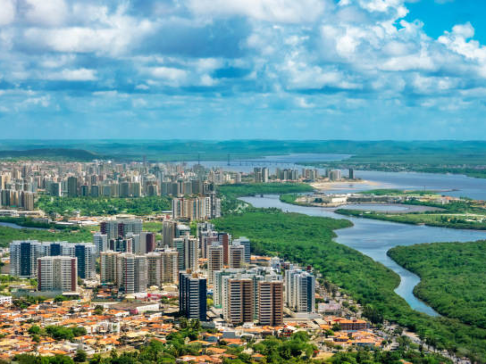

O estado de Sergipe está localizado na região Nordeste do Brasil e é o menor estado brasileiro em extensão territorial. Sua capital, Aracaju, é conhecida por suas praias tranquilas e qualidade de vida. Sergipe possui uma rica cultura, com festas populares e culinária típica do Nordeste. A economia do estado é baseada no comércio, agricultura, indústria e turismo.

Voltar